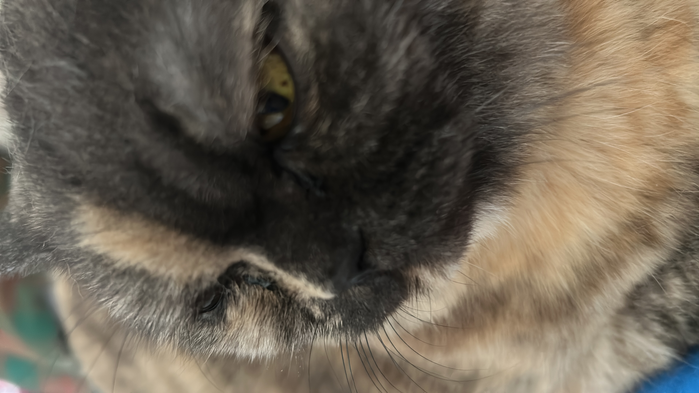

Cat Temperament Explorer
Select a temperament trait to explore cat breeds or view our resident cat, Cloudy!
Status: Idle

Cloudy (Resident Chief)
Temperament: Affectionate, Curious, Calm
Our official household master and absolute ruler.

Select a temperament trait to explore cat breeds or view our resident cat, Cloudy!
Status: Idle

Temperament: Affectionate, Curious, Calm
Our official household master and absolute ruler.